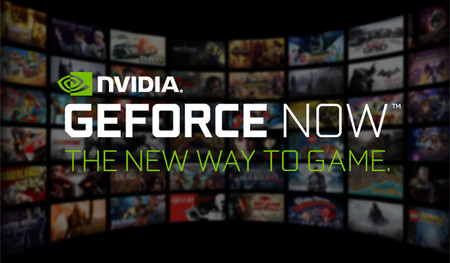

Servicio
GeForce Now es una plataforma de juego en streaming en la nube. Es decir, los ordenadores de Nvidia son los que ejecutan el juego que elijamos y en nuestro dispositivo recibiremos la señal de vídeo mostrándonos el contenido.
Para acceder a GeForce Now hay dos opciones: a través de un dispositivo Nvidia Shield o con las aplicaciones para PC Windows o Mac. Estás aplicaciones para ordenador están aún en fase beta, por lo que necesitamos invitación. Pero antes de continuar un apunte, GeForce Now de Nvidia Shield y de PC/Mac son diferentes.
¿Qué es lo que ofrece?
Con más de 400 juegos principales compatibles, como PLAYERUNKNOWN'S BATTLEGROUNDS, Fortnite y más de Steam, Uplay y otras tiendas digitales populares, puedes jugar tus juegos de PC favoritos en casi cualquier dispositivo dondequiera que vayas. Seleccione juegos de su biblioteca personal de juegos para PC o compre juegos nuevos, con juegos nuevos que se agreguen todo el tiempo. Sus títulos favoritos se cargan más rápido y se mantienen actualizados con los últimos parches cuando transmite desde el servicio en la nube GeForce NOW.
